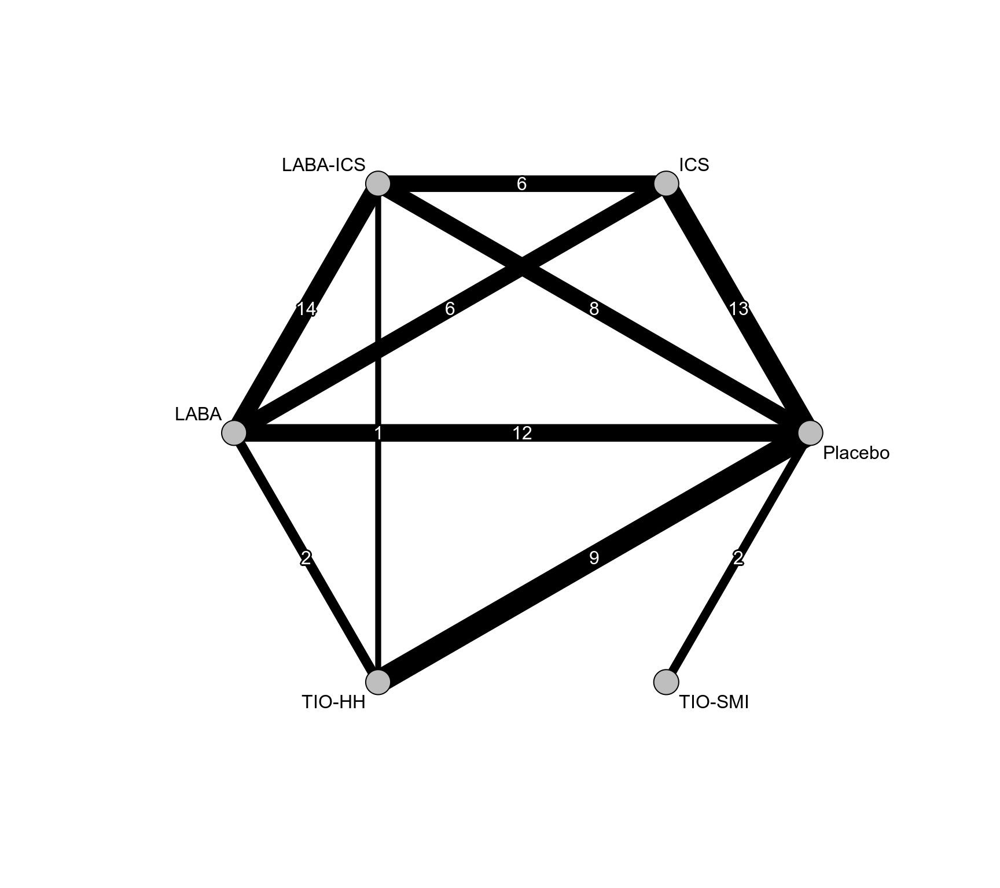
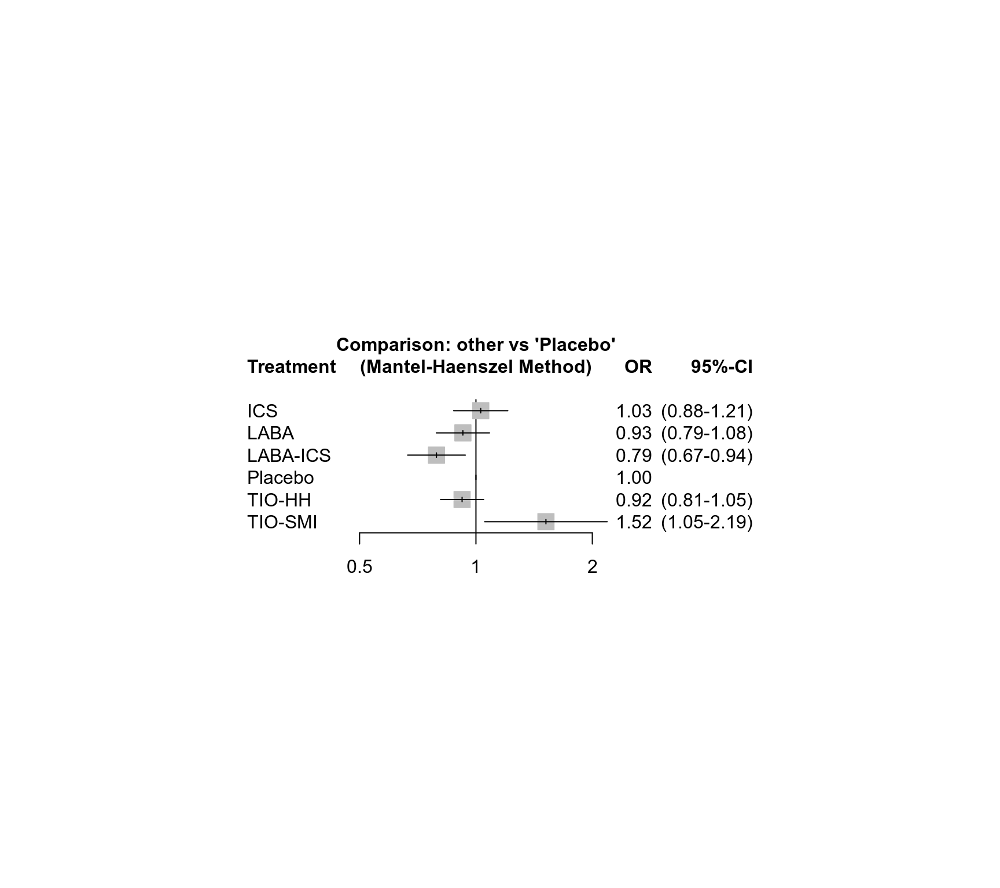

dat.dong2013.RdResults from 41 trials examining the safety of inhaled medications in patients with chronic obstructive pulmonary disease.
dat.dong2013The data frame contains the following columns:
| id | integer | study ID |
| treatment | character | treatment |
| death | integer | mortality |
| randomized | integer | number of individuals |
This network meta-analysis compared the safety of inhaled medications in patients with chronic obstructive pulmonary disease (Dong et al., 2013).
Mortality was reported in 41 randomized trials, with a total of 52 462 patients. Mortality was low, with 2 408 deaths (4.6%) reported across all studies. There were nine studies that reported zero events in at least one of the treatment arms and three additional studies had zero events in all treatment arms.
This dataset was used in Efthimiou et al. (2019) to illustrate the Mantel-Haenszel method for network meta-analysis.
Dong, Y.-H., Lin, H.-H., Shau, W.-Y., Wu, Y.-C., Chang, C.-H., & Lai, M.-S. (2013). Comparative safety of inhaled medications in patients with chronic obstructive pulmonary disease: Systematic review and mixed treatment comparison meta-analysis of randomised controlled trials. Thorax, 68(1), 48–56. https://doi.org/10.1136/thoraxjnl-2012-201926
Efthimiou, O., Rücker, G., Schwarzer, G., Higgins, J., Egger, M., & Salanti, G. (2019). A Mantel-Haenszel model for network meta-analysis of rare events. Statistics in Medicine, 38(16), 2992–3012. https://doi.org/10.1002/sim.8158
medicine, odds ratios, network meta-analysis, Mantel-Haenszel method
### Show first 6 rows / 3 studies of the dataset
head(dat.dong2013)
#> id treatment death randomized
#> 1 1 TIO-SMI 52 1989
#> 2 1 Placebo 38 2002
#> 3 2 TIO-SMI 35 1337
#> 4 2 Placebo 9 653
#> 5 3 TIO-HH 381 2986
#> 6 3 Placebo 411 3006
### Load netmeta package
suppressPackageStartupMessages(library("netmeta"))
### Print odds ratios and confidence limits with two digits
oldset <- settings.meta(digits = 2)
### Change appearance of confidence intervals
cilayout("(", "-")
### Transform data from long arm-based format to contrast-based
### format. Argument 'sm' has to be used for odds ratio as summary
### measure; by default the risk ratio is used in the metabin function
### called internally.
pw <- pairwise(treatment, death, randomized, studlab = id,
data = dat.dong2013, sm = "OR")
### Calculated log odds ratios (TE) and standard errors (seTE)
pw[1:3, 1:9]
#> studlab treat1 treat2 TE seTE event1 n1 event2 n2
#> 1 1 TIO-SMI Placebo 0.3275004 0.21580544 52 1989 38 2002
#> 2 2 TIO-SMI Placebo 0.6541654 0.37683336 35 1337 9 653
#> 3 3 TIO-HH Placebo -0.0796400 0.07633476 381 2986 411 3006
### Conduct Mantel-Haenszel network meta-analysis (NMA)
net <- netmetabin(pw, ref = "plac")
#> Warning: Studies without any events excluded from network meta-analysis: '25' - '37' - '5'
#> Warning: Treatment arm 'Placebo' without events in design 'LABA-ICS:Placebo' excluded from network meta-analysis.
#> Warning: Design 'LABA-ICS:Placebo' with single treatment arm excluded from network meta-analysis.
### Network graph
netgraph(net, seq = "optimal", col = "black", plastic = FALSE,
points = TRUE, pch = 21, cex.points = 3, col.points = "black",
bg.points = "gray", thickness = "se.fixed",
number.of.studies = TRUE)

### Show results for Mantel-Haenszel NMA
net
#> Number of studies: k = 37
#> Number of pairwise comparisons: m = 73
#> Number of observations: o = 50420
#> Number of treatments: n = 6
#> Number of designs: d = 10
#>
#> Common effects model (Mantel-Haenszel method)
#>
#> Treatment estimate (sm = 'OR', comparison: other treatments vs 'Placebo'):
#> OR 95%-CI z p-value
#> ICS 1.03 (0.88-1.21) 0.35 0.7292
#> LABA 0.93 (0.79-1.08) -0.96 0.3363
#> LABA-ICS 0.79 (0.67-0.94) -2.69 0.0072
#> Placebo . . . .
#> TIO-HH 0.92 (0.81-1.05) -1.26 0.2077
#> TIO-SMI 1.52 (1.05-2.19) 2.24 0.0251
#>
#> Test of inconsistency (between designs):
#> Q d.f. p-value
#> 8.35 9 0.4994
forest(net)

### League table with network estimates in lower triangle and direct
### estimates in upper triangle
netleague(net)
#> League table (common effects model):
#>
#> ICS 1.17 (0.96-1.41) 1.30 (1.07-1.57) 1.01 (0.86-1.20) .
#> 1.11 (0.93-1.32) LABA 1.09 (0.91-1.32) 0.90 (0.75-1.08) 1.31 (0.95-1.82)
#> 1.30 (1.08-1.56) 1.17 (0.98-1.39) LABA-ICS 0.80 (0.66-0.97) 0.54 (0.32-0.94)
#> 1.03 (0.88-1.21) 0.93 (0.79-1.08) 0.79 (0.67-0.94) Placebo 1.08 (0.94-1.24)
#> 1.12 (0.92-1.36) 1.00 (0.84-1.21) 0.86 (0.70-1.05) 1.09 (0.96-1.24) TIO-HH
#> 0.68 (0.46-1.01) 0.61 (0.41-0.91) 0.52 (0.35-0.78) 0.66 (0.46-0.95) 0.61 (0.41-0.89)
#>
#> .
#> .
#> .
#> 0.66 (0.46-0.95)
#> .
#> TIO-SMI
### Assess inconsistency
print(netsplit(net), show = "both", ci = TRUE, overall = FALSE,
nchar.trts = 6)
#> Separate indirect from direct design evidence (SIDDE)
#>
#> Common effects model:
#>
#> comparison k direct 95%-CI indir. 95%-CI.1 RoR 95%-CI.2 z p-value
#> ICS:LABA 6 1.17 (0.96-1.41) 0.90 (0.56-1.47) 1.29 (0.77-2.17) 0.96 0.3380
#> ICS:LABA-I 6 1.30 (1.07-1.57) 1.26 (0.73-2.18) 1.03 (0.58-1.85) 0.10 0.9193
#> LABA:LABA-I 14 1.09 (0.91-1.32) 2.35 (1.26-4.38) 0.47 (0.24-0.89) -2.30 0.0216
#> LABA:Placeb 12 0.90 (0.75-1.08) 1.02 (0.73-1.42) 0.88 (0.60-1.29) -0.64 0.5223
#> LABA:TIO-HH 2 1.31 (0.95-1.82) 0.90 (0.72-1.12) 1.45 (0.98-2.16) 1.87 0.0622
#> LABA-I:Placeb 8 0.80 (0.66-0.97) 0.73 (0.48-1.12) 1.10 (0.69-1.75) 0.38 0.7031
#> LABA-I:TIO-HH 1 0.54 (0.32-0.94) 0.92 (0.74-1.14) 0.59 (0.33-1.06) -1.77 0.0775
#> TIO-HH:Placeb 9 0.92 (0.80-1.06) 0.88 (0.63-1.22) 1.05 (0.74-1.50) 0.27 0.7853
#>
#> Legend:
#> comparison - Treatment comparison
#> k - Number of studies providing direct evidence
#> direct - Estimated treatment effect (OR) derived from direct evidence
#> indir. - Estimated treatment effect (OR) derived from indirect evidence
#> RoR - Ratio of Ratios (direct versus indirect)
#> z - z-value of test for disagreement (direct versus indirect)
#> p-value - p-value of test for disagreement (direct versus indirect)
#>
#> Abbreviation Treatment name
#> LABA-I LABA-ICS
#> Placeb Placebo
### Use previous settings
settings.meta(oldset)